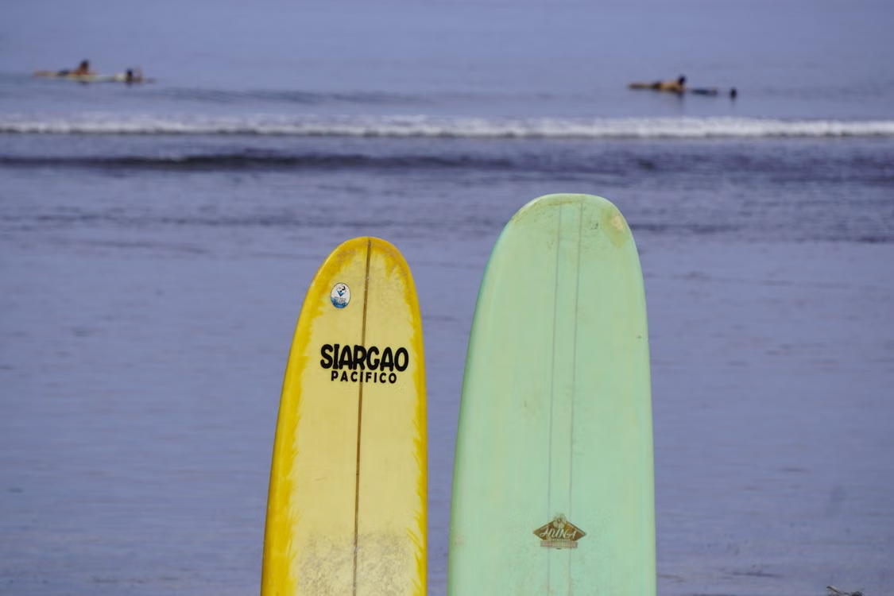
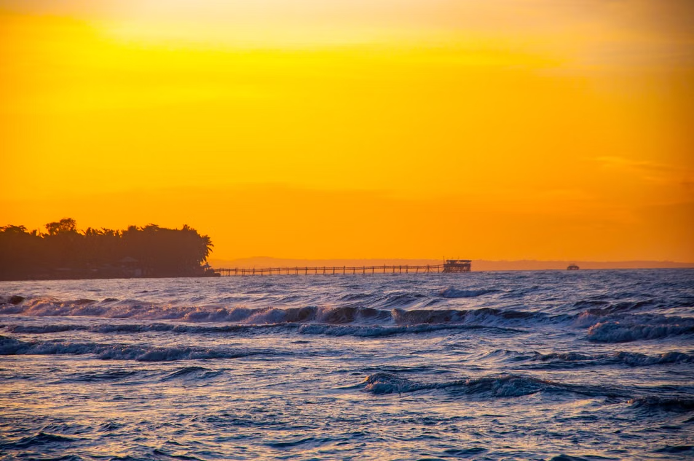

Field Notes — Siargao Island, Philippines
The Island That Almost Drowned in Paradise
Siargao and the cost of tourism growth. After years of booming tourism, the island is learning how to protect what made it special.
Field Notes — Siargao Island, Philippines
Siargao and the cost of tourism growth. After years of booming tourism, the island is learning how to protect what made it special.

Sunrise in Siargao. Photo by MindaNews. mindanews.com
At sunrise, Siargao begins in silence. Near Cloud 9, a fisherman rows across calm waters while the island is still resting. But as the day unfolds, the silence disappears. Tourists gather along the boardwalk, surfboards in hand, chasing waves and photos of paradise. The island that once felt slow now moves with constant energy. A tricycle rattles past as a barefoot local balances a basket of freshly caught fish, the scent of salt and sea still clinging to the air. In Siargao, this contrast defines everyday life, where quiet routines meet a growing wave of visitors drawn to its beauty. Known for the legendary breaks at Cloud 9, the island offers more than just surf; it holds hidden lagoons, palm-lined roads, and a culture rooted in simplicity. Even as energy builds tourism, Siargao continues to carry its original rhythm, shaped by the sea and the people who have long called it home.



A famous Cloud 9 destination for surfing. Source: The Filipino Times.
When I traveled to Siargao, its rise as a global tourism destination felt like a real and unfolding challenge: how to grow tourism without destroying the very environment that attracts visitors. I observed that its natural beauty continues to draw people in, yet it also reflects what regenerative tourism research describes as a shift from simply reducing harm to actively improving destinations and supporting local communities (Bellato & Pollock, 2023). This perspective aligns with global sustainable tourism goals promoted by the United Nations World Tourism Organization (UNWTO, 2023). As I explored the island, I saw how tourism has created jobs and economic opportunities for locals, bringing both energy and livelihood to the community. At the same time, I noticed an increasing pressure on waste systems, coastal ecosystems, and daily island life.
8.9%
of the Philippines' GDP came from tourism in 2024 — Philippine Statistics Authority, 2025 — underscoring both the industry's economic weight and the responsibility that comes with it.

I realized that every traveler has a responsibility. Supporting local businesses, respecting community traditions, reducing plastic waste, and protecting the island's natural resources are not difficult choices; they are meaningful ways to ensure that Siargao remains beautiful for generations to come.
Tourism should never come at the expense of the environment or the people who have cared for this island long before it became a global destination.

Responsible travel doesn't have to involve big sacrifices — just steady, ordinary habits.
Looking back, Siargao changed the way I think about traveling. Before this trip, I believed that the best vacations were the busiest ones. Now, I understand that the most unforgettable experiences often come from slowing down, appreciating the present, and allowing a place to teach you something beyond what you can see in photographs.